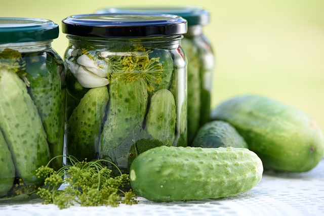
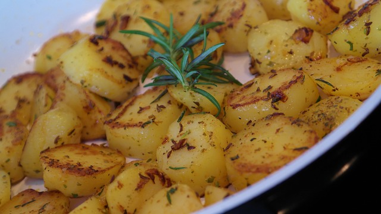

Dirk's Dill

A pickled cucumber (commonly known as a pickle in the United States, Australia and Canada, and a gherkin in Britain ,Ireland, South Africa, and New Zeland) is a cucumber that has been pickled in a brine, vinegar, or other solution and left to ferment for a period of time, by either immersing the cucumber is an acidic solution or through souring by lacto-fermantation. Pickled cucumber are often part of mixed pickles.
New potatoes with sour cream and dill is a clasic Ukrainian recipe. Spring and early summer is a season for new potatoes New potatoes are freshly harvested young potatoes with paper-thin skin. They are so delicious that I can eat new potatoes every day! You can serve it with any meat or fish.
